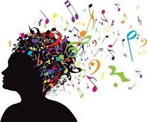

Escrever é esquecer. A literatura é a maneira mais agradável de ignorar a vida. A música embala, as artes visuais animam, as artes vivas (como a dança e a arte de representar) entretêm. A primeira, porém, afasta-se da vida por fazer dela um sono; as segundas, contudo, não se afastam da vida - umas porque usam de fórmulas visíveis e portanto vitais, outras porque vivem da mesma vida humana. Não é o caso da literatura. Essa simula a vida. Um romance é uma história do que nunca foi e um drama é um romance dado sem narrativa. Um poema é a expressão de ideias ou de sentimentos em linguagem que ninguém emprega, pois que ninguém fala em verso.
